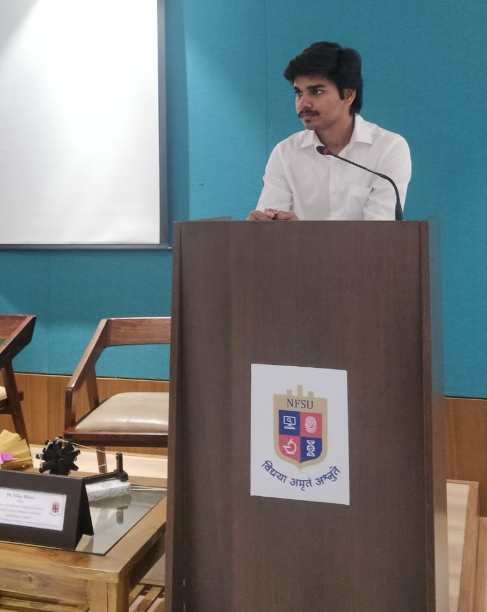

As a student, I contribute to the online community of developers and learners by creating and sharing
content, organizing events, and providing feedback. I am passionate about cybersecurity and have completed a
certification in deep learning from NVIDIA.
I am pursuing an integrated BTech-MTech CSE degree with a specialisation in Cybersecurity at NFSU, where I
have developed strong skills in programming languages such as C,C++,Python, cybersecurity tools based on the
Kali Linux OS, cryptography and steganography. I have co-authored a book named 'Prints on the Paper' and
published several articles on various platforms. I enjoy music and play the Flute. I am interested in intern
roles that involve subject matter expertise, teaching, quality checking, data analysis.